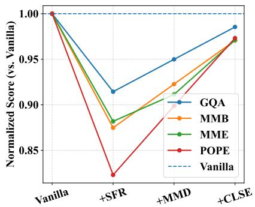

Figureure 2 · Overview of the proposed spectral evolution-guided token pruning frameFigure 2. Overview of the proposed spectral evolution-guided token pruning framework. Left: Cross-layer spectral evolution is computed by transforming layer-wise token representations into the frequency domain, suppressing low-frequency components via a Gaussian highpass filter, and measuring the normalized spectral difference between adjacent layers. Tokens exhibiting stronger spectral redistribution are considered decision-critical and preserved. Right: The CLSE module is integrated into early LLM decoder layers to guide token selection. Compared with raw attention scores, CLSE provides a more reliable signal for identifying semantically evolving tokens.这张图概括 Spectral Evolution-Guided Token Pruning in 的整体方法流程。阅读时先看模块之间传递的训练信号，再看作者如何把目标拆成可优化的子问题。

(c) Token Importance Metrics Figure 5(c) Token Importance Metrics Figure 5. Ablation studies on LLaVA-1.5-7B pruned after the first layer of LLM decoder with 192 retained tokens. Scores are normalized to the Vanilla model. (a) Effect of the Gaussian high-pass cutoff ratio. (b) Effect of spectral evolution and its integration with attention. (c) Impact of the magnitude measures for cross-layer component analysis. Q: What type of Q: What is the person Q: What is the person sandwich is shown? doing in this image? doing in this image? Q: Describe the train scene in this image. Q: Describe the kite flying scene. Q: What is the person doing in this image? Figure 6. Qualitative comparison of token importance maps. Top row: original images. Second row: attention-based token scores. Third and fourth rows: CLSE without frequency suppression (r = 0) and with moderate suppression (r = 0.1), respectively. Compared to attention, CLSE highlights structurally evolving and semantically relevant regions while suppressing redundant background areas. Moderate frequency filtering further improves focus on task-relevant objects.这张图/表用于判断 Spectral Evolution-Guided Token Pruning in 的实验收益来自哪里。重点看替换、消融或跨模型设置下趋势是否一致，而不是只看单个最高分。